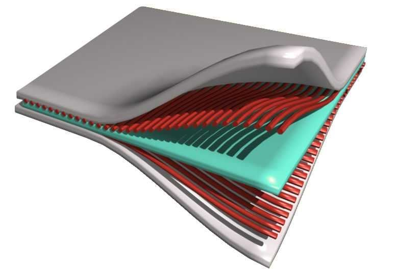

|  |
|
Источники:
Композиционные материалы (композиты) – многокомпонентные материалы, состоящие, как правило, из пластичной основы (матрицы), армированной наполнителями, обладающими высокой прочностью, жесткостью и т.д. Сочетание разнородных веществ приводит к созданию нового материала, свойства которого количественно и качественно отличаются от свойств каждого из его составляющих. Варьируя состав матрицы и наполнителя, их соотношение, ориентацию наполнителя, получают широкий спектр материалов с требуемым набором свойств. Многие композиты превосходят традиционные материалы и сплавы по своим механическим свойствам и в то же время они легче. Использование композитов обычно позволяет уменьшить массу конструкции при сохранении или улучшении ее механических характеристик. Компонентами композитов являются самые разнообразные материалы:
|